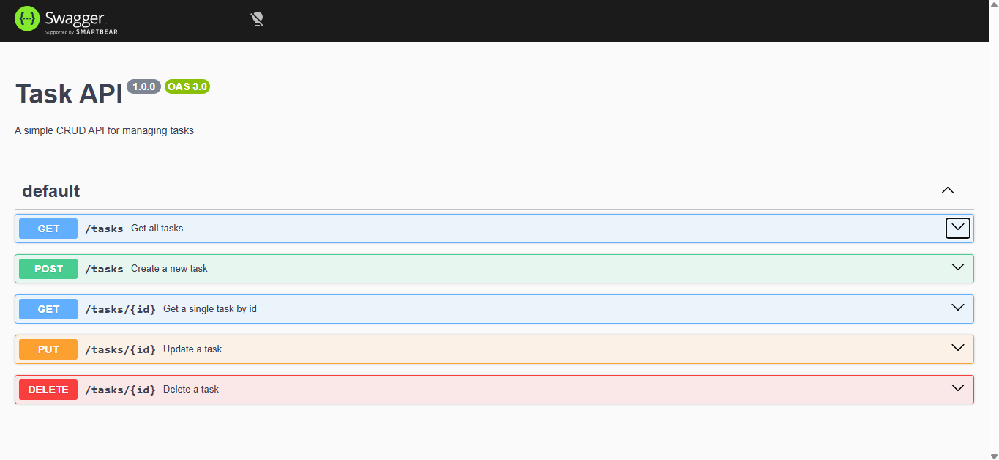
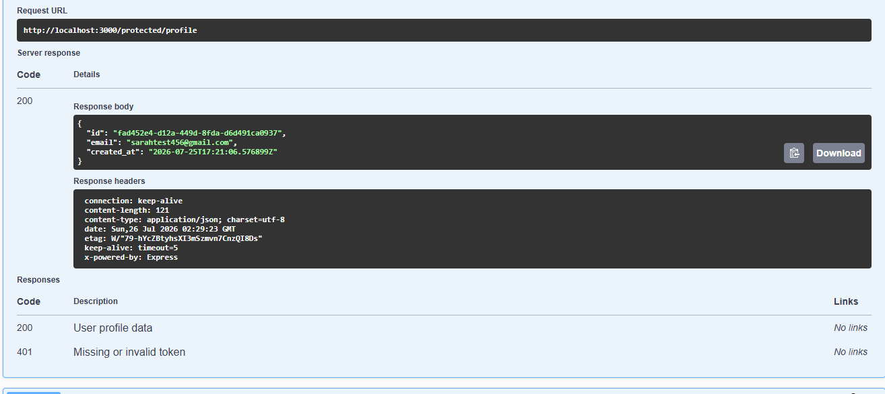
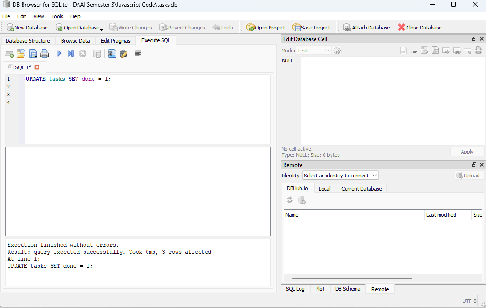

FEATURE / 01
Idempotent usage metering
Designed to avoid counting the same usage event more than once when a request is retried.
HOME / CAPSTONE
A backend service designed to track product usage, enforce quotas, calculate AI-token costs, and support billing workflows — extending my existing Node.js API into a more complete service.
01 / Overview
This capstone explores the backend pieces needed when a product must measure usage and connect it to limits and billing. The focus is on clear behavior, safe request handling, and keeping the data layer understandable.
Designed to avoid counting the same usage event more than once when a request is retried.
Usage limits help determine whether an operation should be allowed to proceed.
Calculates usage costs from token-related inputs, connecting technical activity to understandable cost data.
Stripe test-mode webhook handling checks signatures before processing incoming events.
02 / Project details
Built on top of my tiny-backend project, this work brings together API design, authentication, persistence, and billing-related workflows.
Note: Stripe is configured for test-mode development. This project page describes a learning capstone, not a production payment service.
03 / Under the hood
These screenshots document the API surface, protected routes, and local database used during development.



04 / Source code
Browse the repository for the code and project structure.